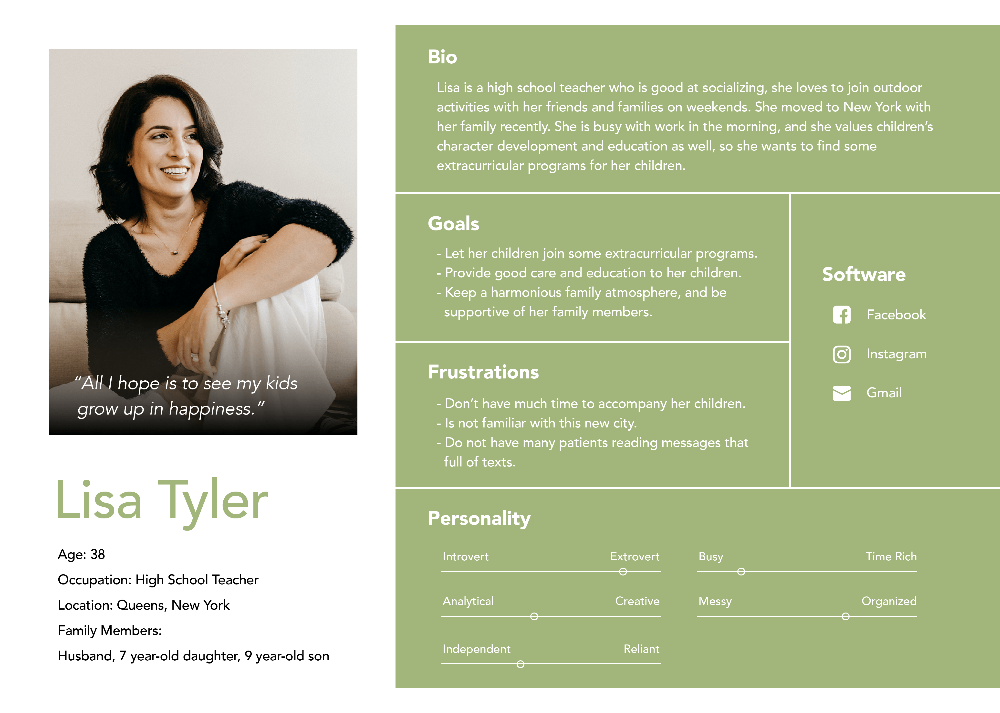

Make Caregivers become well informed after browsing through the Girl Scouts website
Website Redeign
UI/UX Design Team : LiangYu Su, Esther Kim, Tess Porter, Jiacheng Chen, Jiayi Jiang
Project Time : 2022.08 - 2022.12
Project Brief
The Girl Scouts is a place where to develop girls’ skills and positive features. We stood from caregivers’ view to rethink the whole website, used several UX research methods to find out the potential lack of information from the current website. Our group mainly focus on condensing information and adjusting structure of labels to make information which caregivers pay attention to, easily be found and reviewed.
(Interview and Survey)
What do caregivers value about the girl scouts?
Purpose:
Conducted a 10-15 minutes interview protocol and 8-10 minutes survey to find out what caregivers care about when searching information for their children. And figured out the potential information needs of caregivers from their experience sharing and viewpoints.
Data:
4 interviews and 4 survey respondents
after conducting the interview and collecting information, I have formulated some insights:
1. Promotion through Word of Mouth
4/4 of the Interviewees received information about extracurricular programs such as
the Girl Scouts from friends or colleagues, or their children heard from their
classmates.
2. Importance of Children's Voices
3/4 of the interviewees thought children’s interest is the most important reason for
them to decide if let their children join a program or not.
3. Complementary Relationship between Visuals and Text
3/4 of the Interviewees mentioned that they like to receive information through a
mixture of visuals and text. Moreover, if a piece of information can also provide links to more information that would be helpful.
4. Clarity of Program's Vision
2/4 of the interviewees value program’s vision, and they search on the website to see if the program’s vision is aligned with what they are looking for.
(Persona)
The caregivers who have potential possibilities to let her children join the Girl Scouts.

(Card Sorting)
Find out how our project target group classify the information from the Girl Scouts website, to help us build information structure.
Data: 8 respondents; 57 cards to sort
Results: 7 main categories 3 levels hierarchy 60 content pages
(Tree Test)
Test about the flow that participants go through to complete our 8 tasks.
Data: 8 respondents
Results: 34% of success; 47% of directness
Communicating Content Structure Notable Changes
1. Cookie Selling Tips
Renamed Label Name-
“Cookies” to “Cookie Program”
”Cookie Training Videos” to “Cookie Selling Tips”
2. Fundraising Events
Moved label under T1 “Support” & under T2 “Donate”
Nested the 3 donation events under new T3 “Fundraiser Events”
3. The Girl Scout Network
Moved The Girl Scout Network into our “Join Us” category.
(Competitive Analysis)
Learn advantages of website features from others websites which provide similar services as the Girl Scouts.
We compared eight main features among different websites which include Homepage, Navigation, Organization, Links/Labels, Appearance, Search, Content and Mobile-Friendliness.
(Lo-fi prototype)
Inspiration in team to create ideas which solve problems we found so far and conducted user test.